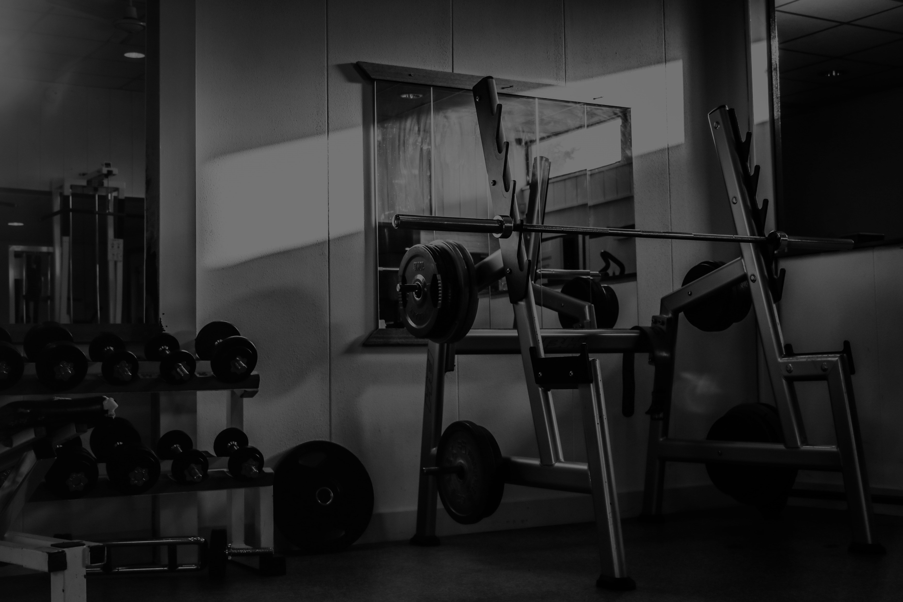

ENTRE NA VIDA
FITNESS
Treinar é sentir que você pode fazer algo que depende do seu esforço e da sua determinação. Quanto mais motivado você estiver, melhores vão ser os resultados.
CADASTRE-SE


Treinar é sentir que você pode fazer algo que depende do seu esforço e da sua determinação. Quanto mais motivado você estiver, melhores vão ser os resultados.
CADASTRE-SEAqui você cria seus próprios treinos personalizados para alcançar seus objetivos e metas. Comece sua jornada fitness de forma prática e divertida, e transforme seus hábitos para uma vida mais saudável e ativa, possibilitando um ótimo bem estar!
ENTRAR
A base do Fitness Routine é a constância. Mais do que intensidade, é o compromisso diário com o seu corpo que gera os melhores resultados. Criar uma rotina sólida permite que seu corpo se adapte, evolua e se fortaleça com segurança. Todo dia é uma nova chance de progredir.
Não importa se você treina 20 minutos ou 2 horas — o que conta é fazer do exercício um hábito. A plataforma oferece variedade para que você não enjoe e possa manter o ritmo. Afinal, não existe transformação sem repetição e disciplina, e isso é o que faz a diferença real.
A constância também impacta sua mente: treinar melhora o foco, a autoestima e a disposição. O Fitness Routine entende isso e ajuda você a manter o equilíbrio entre esforço e prazer.
CRIE O SEUConheça mais sobre o mundo fitness e descubra como ele pode transformar não apenas o seu corpo, mas também a sua mente e estilo de vida. Por trás de cada treino, há técnicas curiosas para melhorar o desempenho e segredos da nutrição que fazem a diferença nos resultados. Pequenas mudanças na rotina e nos hábitos saudáveis podem aumentar sua energia, melhorar o humor e prevenir doenças. Fique por dentro de tudo o que acontece no universo dos treinos, da alimentação equilibrada
FIQUE POR DENTRO